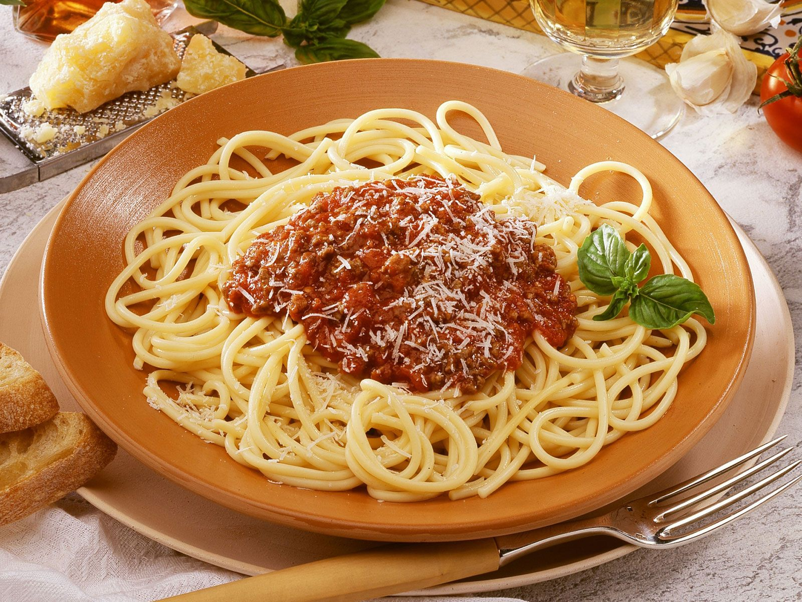

Gloria's favorite Spaghetti Bolognese!

Description
This is Gloria's favorite recipe for Spaghetti Bolognese. Our son loves it too!
We make this dish at least once a month, in the winter more often.
We use ground beef and fresh tomatoes.
Ingredients
- 500g Ground Beef
- 1 Onion - chopped
- 2 Cans of chopped tomatoes
- 2 Tbsp of ground oregano
- Salt and Pepper to taste
- 500g of spaghetti
Steps
- In a large pot bring 4 liters of water to a boil. Add 2 Tbsp of Salt. Add pasta. Stir occasionally.
- Remove pasta from water when al-dente (observe cooking time listed on package)
- While pasta is cooking: In a large pan warm a trickle of olive oil. Add chopped onions and glaze for 3 minutes.
- Add ground beef and brown until the meat is cooked all the way. Add a few pinches of salt to the meat.
- Add a swig of red wine to the meat as well as the oregano. Let simmer until wine is mostly gone.
- Add both tomato cans and stir. Cook sauce on medium heat for 25 minutes.
- Add salt and pepper to taste
- Serve with ground Parmesan cheese.
Back to Recipes